×
Hybrid ML + DL classification of baby cries into five states
Meghavi Rao (230044) · Belal Raza (230094)
Deep Learning & Advanced Machine Learning · 2026
Five cry types, each from a distinct reflex — but the dataset is massively skewed toward hunger.
Augmented audio written to disk before splitting → near-copies in both train and test. Some infants had up to 13 recordings scattered across splits.
GroupShuffleSplit by infant UUID — no baby in multiple splits. Augmentation only on training data, in-memory, never to disk.
| Block | What it captures | Dims |
|---|---|---|
| MFCC | Spectral envelope shape | 240 |
| CQCC | Fine-grained harmonic structure | 120 |
| F0 Contour | Pitch dynamics (pain vs hunger) | 7 |
| Spectral Contrast | Harmonic richness | 14 |
| Chroma | Pitch class distribution | 24 |
| Spectral Desc. | ZCR, centroid, energy, etc. | 6 |
| Total | 411 |
Baby cries have three modes: modal voice (~400 Hz, hunger), hyperphonation (>1000 Hz, pain), and dysphonation (turbulent, distress). Our features capture all three.
Constant-Q Transform gives 3–4x finer frequency resolution in the 250–2000 Hz range where cry harmonics live, compared to standard FFT.
| Model | Accuracy | Macro F1 | MCC |
|---|---|---|---|
| SVM (SMOTE) | 0.815 | 0.270 | 0.216 |
| Ensemble | 0.837 | 0.249 | 0.155 |
| Bayesian GMM | 0.641 | 0.207 | −0.045 |
| Random Forest | 0.804 | 0.179 | 0.013 |
| XGBoost | 0.804 | 0.178 | −0.045 |
| HMM | 0.674 | 0.162 | −0.080 |
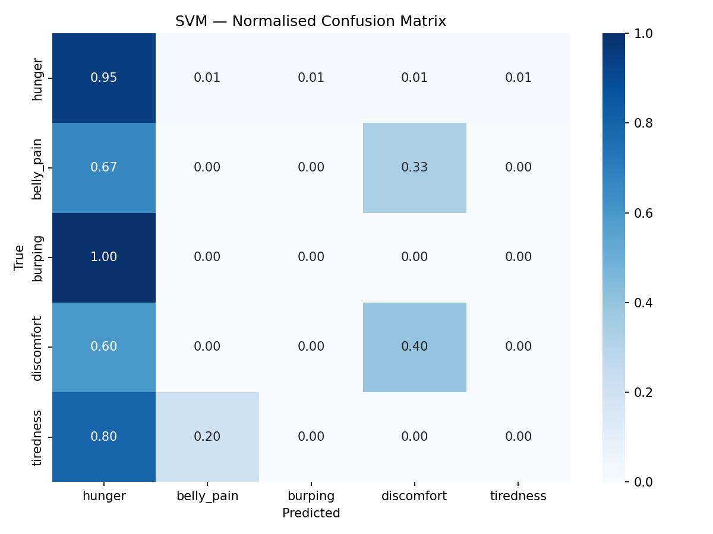
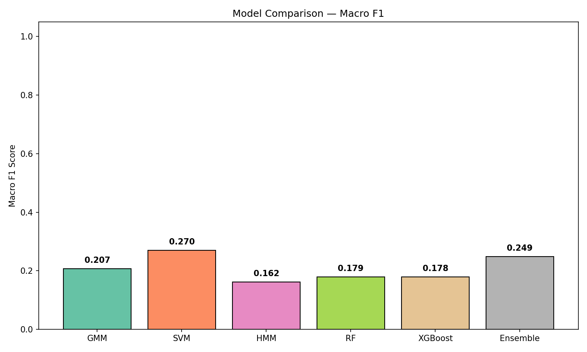
64-band mel-spectrogram → 2× Depthwise-Sep Conv + SE Attention → BiLSTM (hidden=20) → Temporal Attention → context vector
32 features (F0 stats, HNR, jitter, shimmer, MFCC means) → Linear + ReLU + LayerNorm
Concatenate both branches (72-dim) → MLP + Dropout(0.3) → 5-class output
Class-dependent margins push decision boundaries away from minority classes
Uniform weights first 60 epochs, then class-balanced to adjust boundaries
Blends training pairs (50% batches) to smooth decision boundary
326 → 1,920 samples (384/class): pitch, time, noise, reverb
Random frequency + time masking on spectrograms during training
Freeze backbone, retrain classifier with balanced sampling (30 epochs)
| Model | Params | MacF1 | vs SVM |
|---|---|---|---|
| Teacher | 135K | 0.293 | +0.023 |
| + LDAM+DRW | 12K | 0.206 | −0.064 |
| CNN Baseline | 1.3K | 0.190 | −0.080 |
| Fusion+cRT | 16K | 0.182 | −0.088 |
| CNN+BiLSTM+Attn | 12K | 0.145 | −0.125 |
| Hierarchical | 17K | 0.137 | −0.133 |
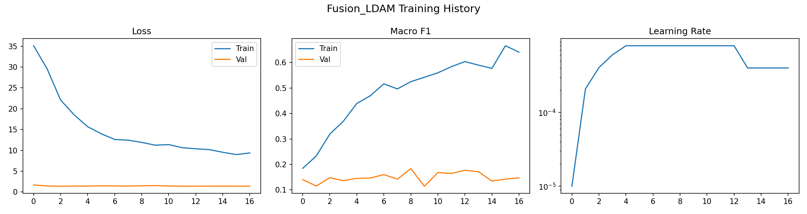
326 originals is far too few. 8 burping samples × 64x augmentation = same 8 templates repeated. Can't create genuinely new patterns.
63 val samples (51 hunger). One correct minority prediction swings F1 by 0.05–0.10. Early stopping becomes random.
Train F1 = 0.65, Val F1 = 0.18. Six regularisation techniques weren't enough. This is a capacity-data mismatch.
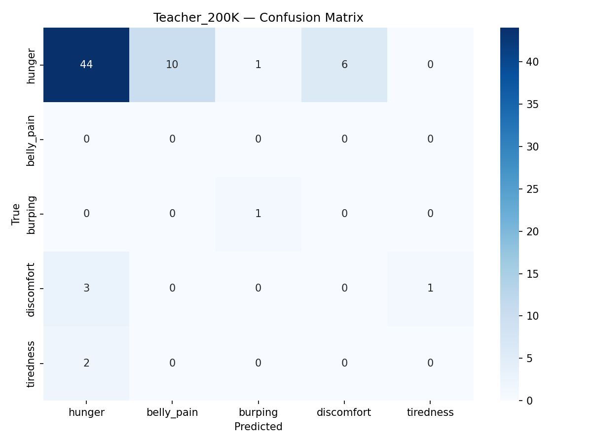
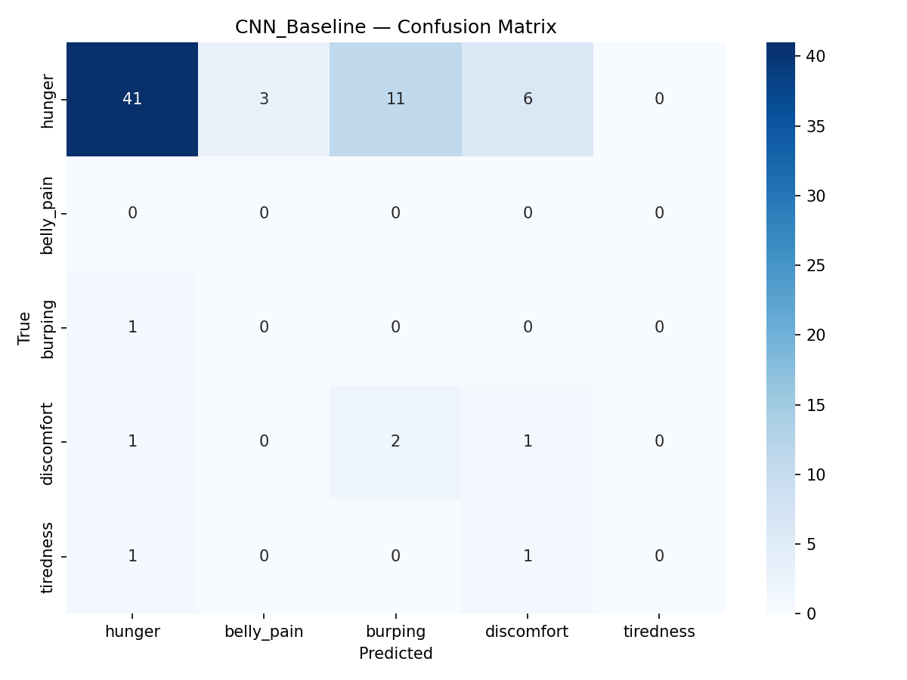
Combine SVM probabilities + DL probabilities via weighted average
Weights: SVM = 0.35 · DL = 0.30 · RF = 0.35 (RF zeroed due to version mismatch)
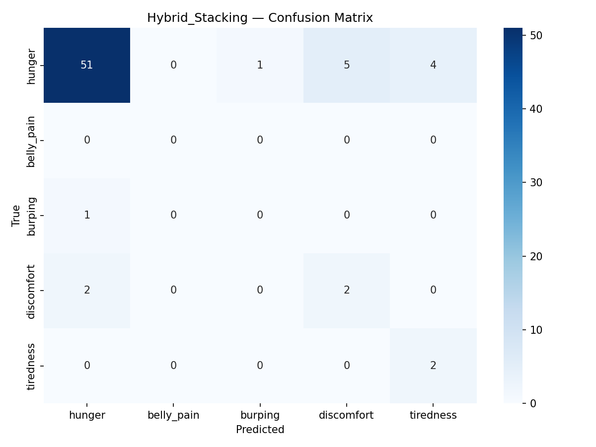
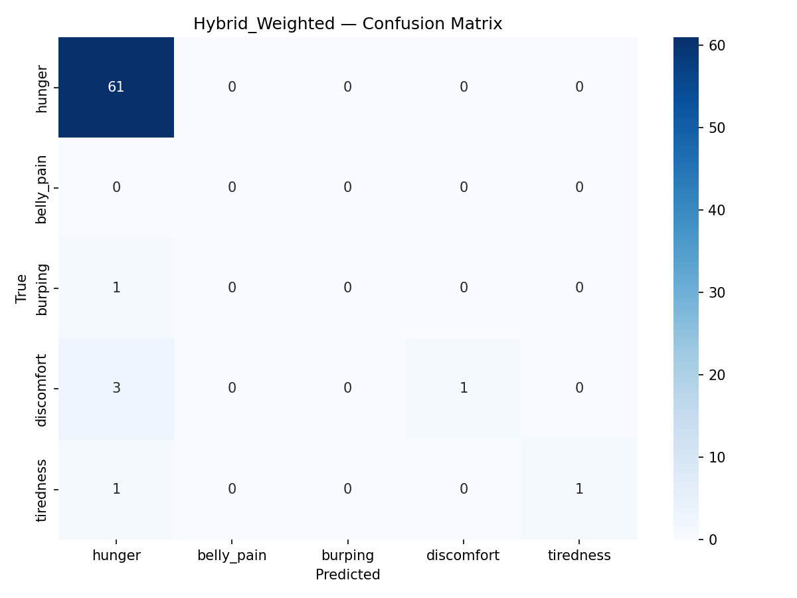
Captures global spectral patterns on 411-dim features. Reliable on hunger, partial on discomfort.
Captures fine-grained temporal patterns from spectrograms that clip-level stats miss.
Weighted averaging preserves each model's high-confidence predictions while smoothing errors.
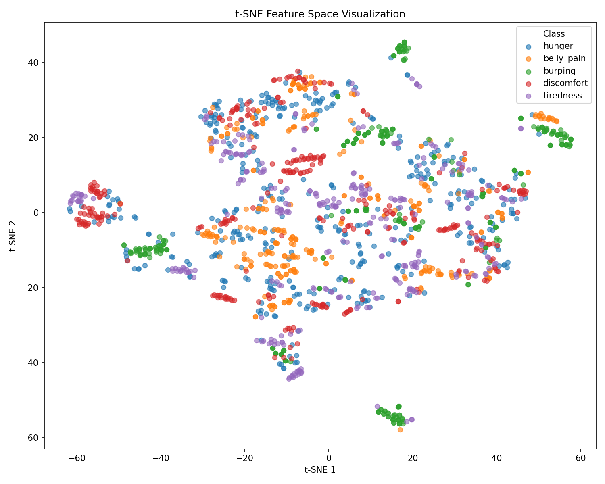
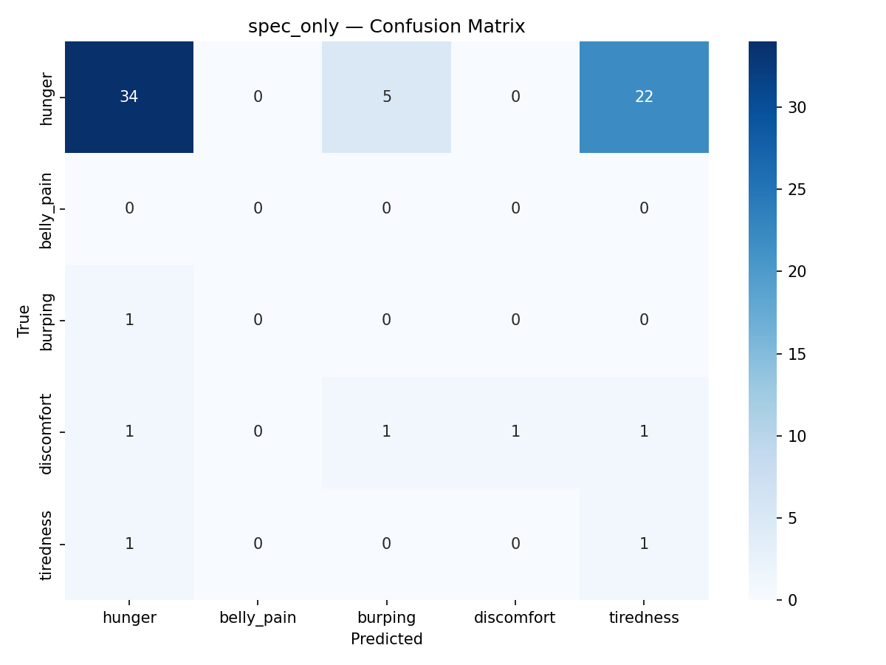
| Variant | MacF1 | Δ vs SVM |
|---|---|---|
| Teacher (135K) | 0.293 | +0.023 |
| Spec-only (12K) | 0.293 | +0.023 |
| CNN only | 0.190 | −0.080 |
| No augmentation | 0.184 | −0.086 |
| Full model (cRT) | 0.182 | −0.088 |
| CE loss (no LDAM) | 0.163 | −0.107 |
| No attention | 0.159 | −0.111 |
| No BiLSTM | 0.146 | −0.124 |
| Hierarchical | 0.137 | −0.133 |
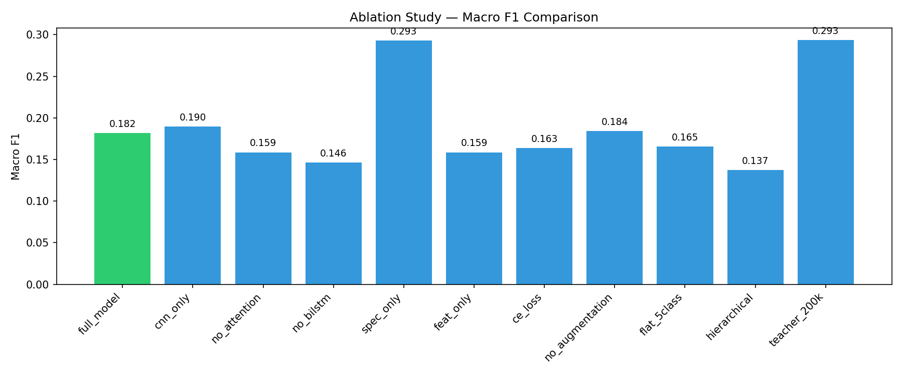
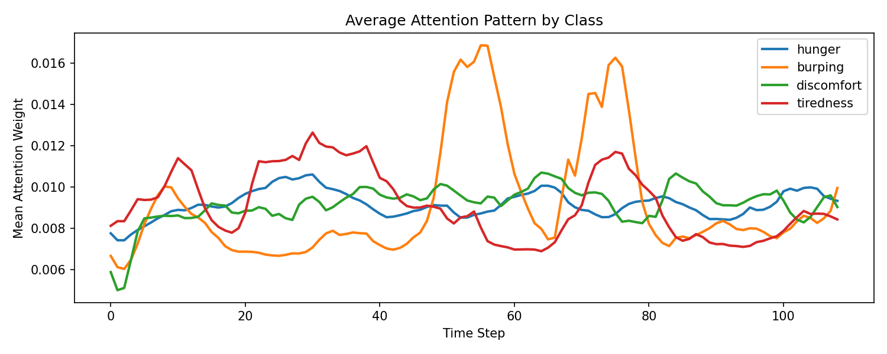
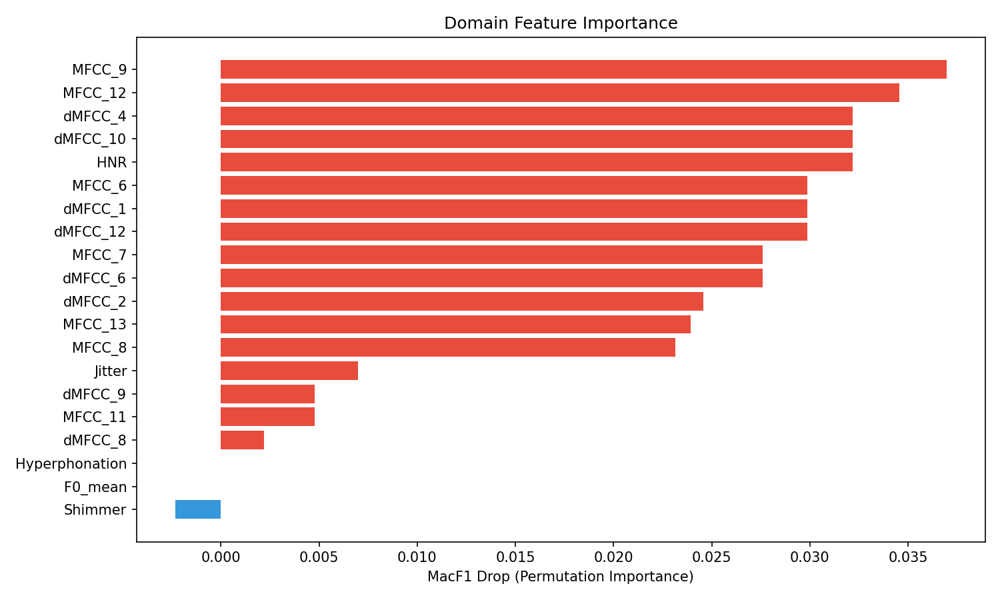
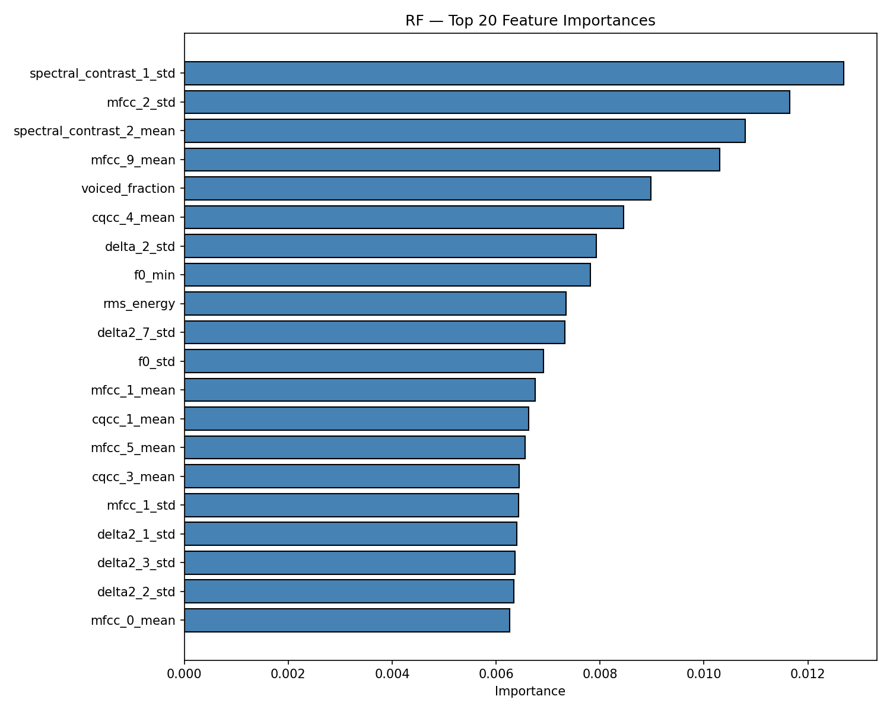
| Approach | Accuracy | Macro F1 | Weighted F1 | MCC | |
|---|---|---|---|---|---|
| A | ML Baseline (SVM) | 0.815 | 0.270 | 0.783 | 0.216 |
| B | DL Only (Fusion+cRT) | 0.603 | 0.182 | 0.686 | 0.002 |
| C | Hybrid Weighted | 0.926 | 0.507 | 0.905 | 0.520 |
GroupShuffleSplit dropped us from 96.5% to 27.0% — painful but honest. Without this, everything downstream would be built on a lie.
With 457 samples and 48:1 imbalance, every DL model underperformed a simple SVM. No architecture overcomes 8 training samples.
Hybrid ensemble achieved +87.5% because SVM and DL make complementary errors. Diverse signals beat deeper models.
Tiny test set: 68 samples, 0 belly pain, 1 burping — per-class stats are noisy
Single corpus: Results specific to Donate-a-Cry. Cross-corpus validation needed
Broken RF: Scikit-learn version mismatch zeroed RF's contribution to hybrid
No transfer learning: AudioMAE / YAMNet pretraining could help significantly
Self-supervised pretraining on large-scale audio data for robust representations
Edge deployment: TFLite Micro on ESP32 + ONNX.js for browser inference
Better fusion: Cross-validated stacking, per-sample attention weights
More data: Multi-site collection + cross-corpus evaluation
Meghavi Rao (230044) · Belal Raza (230094)
6th Semester · Project 3 · 2026